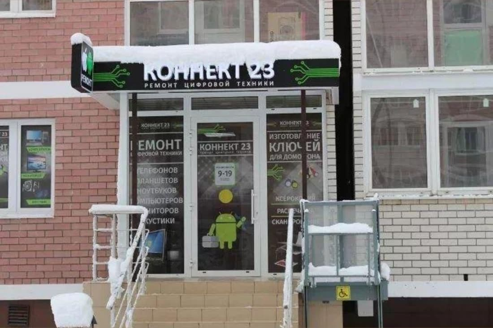
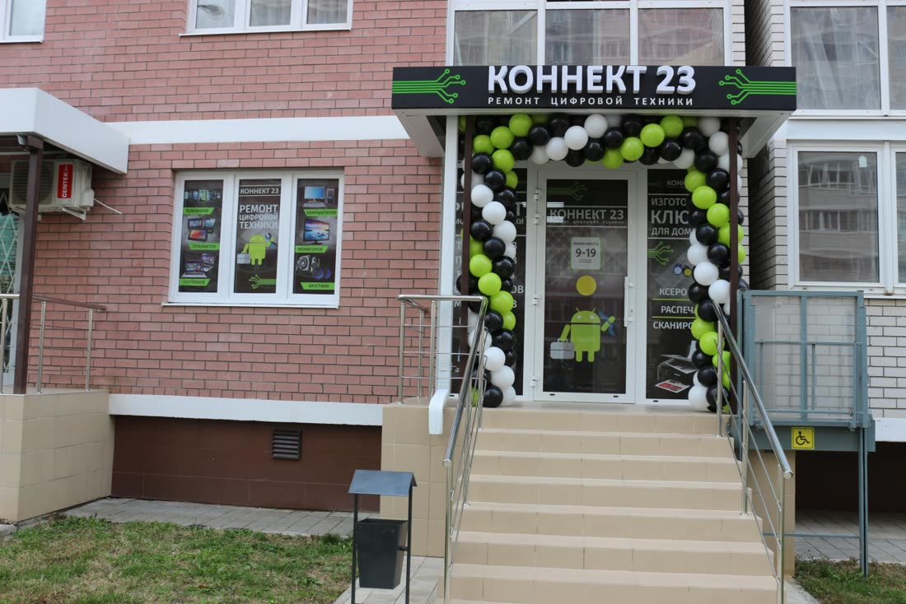
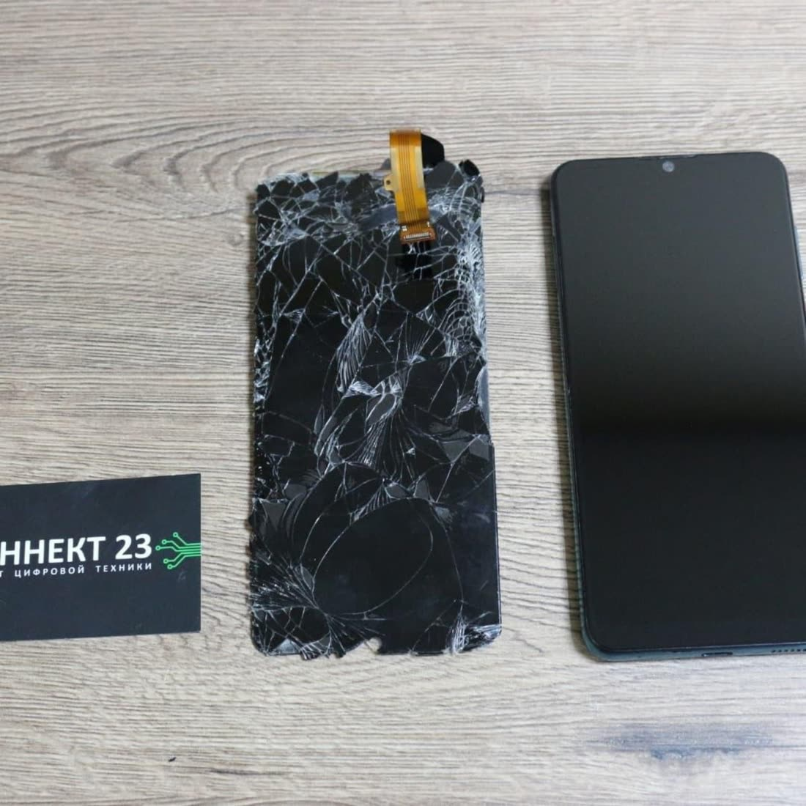

| 2ГИС | Яндекс Карты | |
|---|---|---|
| Рейтинг | 4,8 · 35 оценок, 25 отзывов | 4,7 · 29 оценок, 19 отзывов |
| Статус карточки | «Компания давно не обновляла данные» | Подтверждена, но у цен «Давно не обновлялось» |
| Часы работы | Пн–Сб 9:00–19:00 без перерыва, «по предварительному звонку» | Пн–Сб 9:00–19:00, перерыв 13:00–14:00 |
| Оплата | Наличные, перевод | Только наличные |
| Ключ для домофона | 200 ₽ | 150 ₽ |
| Ответы на отзывы | 1 из 25 | 1 из 19 |
| Сайт | Нет | Только бесплатный шаблон Яндекса |
Что нашёл
На вашей карточке рекламируются конкуренты важно
В 2ГИС прямо под вашим адресом и телефоном стоит блок «Похожие организации» с рекламой: Сервис Pedant.ru. Ремонт смартфонов от 490 руб. При вас за 20 минут. 100%-ная гарантия!
и кнопкой «Узнать цену за 1 минуту». Рядом «Элит класс» с ключами. В Яндексе в «Похожих местах» первым идёт «ЭтоСервис» с промо Ремонт за 23 минуты! Диагностика 0 руб.
Человек открыл вашу карточку, увидел, что у вас цены 2023 года и нет ни слова про сроки, а у соседа «за 20 минут с гарантией». Решение принимается за секунды.
В 2ГИС и Яндексе разные графики, и единственная плохая оценка как раз про это важно
В 2ГИС: 9:00–19:00 без перерыва и приписка «по предварительному звонку». В Яндексе: перерыв с 13:00 до 14:00. На двери просто «9–19». Единственный отзыв на 1 звезду в 2ГИС: Пришёл, закрыто на обед? Обеда нет в режиме работы...
. Вы ответили, что обеда нет, но иногда нужно отъехать. Человек этого заранее знать не мог.

2ГИС пишет каждому: «Компания давно не обновляла данные» важно
Эту строку видит каждый, кто открывает карточку. В разделе «Актуальность данных» стоит «не подтверждена». Прайс в 2ГИС последний раз обновлялся 25 мая 2023 года. Человек с разбитым телефоном читает это как «может, уже не работают» и звонит соседям.
2 ответа на 44 отзыва заметно
Люди пишут очень честный мастер
, спасли утонувший телефон
, официальный сервис отказал в ремонте
(и здесь починили). В 2ГИС отвечен 1 отзыв из 25, и это ответ на жалобу, в Яндексе 1 из 19. Все благодарности в 2ГИС остаются без ответа, а карты охотнее поднимают тех, кто отвечает.
Для 2ГИС вы в первую очередь мастерская ключей заметно
Заголовок вашей страницы в 2ГИС: «Коннект 23, сервисный центр, Изготовление дубликатов ключей». Первая рубрика тоже «Изготовление ключей». Поэтому все шесть вопросов в блоке «Вопросы о месте» про ключи: Делают автоключи с чипом?
, Есть выезд для вскрытия дверей?
. Отвечает на них ИИ-помощник, не вы. Рубрик для ноутбуков, приставок, телевизоров и печати нет, хотя всё это написано на вашей витрине и есть в прайсе.

Цены в карточках разные и старые заметно
Ключ для домофона в 2ГИС 200 ₽, в Яндексе 150 ₽. Оплата в 2ГИС «наличные и перевод», в Яндексе «только наличными». Ремонт телефонов в 2ГИС это три строки без моделей: «Замена экрана от 1 000 ₽». Человек с конкретным iPhone не понимает, сколько это будет у него, и идёт к тем, кто пишет точнее.
Вместо сайта шаблон Яндекса с мусором в каталоге просто
У вас есть бесплатная страница konnekt-23.clients.site. В её каталоге есть раздел «Коннов» без товаров, цены те же, что в Яндексе, а для связи Viber и WhatsApp. Из 2ГИС на неё ссылки нет, и в контактах Яндекс Карт я её тоже не нашёл.
В Яндексе в 8 раз меньше оценок, чем у конкурентов просто
У вас 29 оценок. В «Похожих местах» на вашей карточке: «ЭтоСервис» 5,0 и 236 оценок, «Честный мастер» на Яцкова 5,0 и 234 оценки, у обоих значок «Хорошее место 2026». Клиенты вами довольны, их просто никто не просит оставить отзыв.
Фото: одно внутри, много картинок из интернета просто
В 2ГИС 34 фото: 7 снаружи, 1 внутри, 26 в разделе «Товары». Часть из них похожа на рекламные картинки, а не на ваши работы. При этом у вас есть отличные свои фото: мастер за паяльной станцией, экран «было и стало» с вашей визиткой, рабочее место с приборами.

Что предлагаю
Беру на себя всё из списка, от вас нужно только подтвердить карточки по коду из СМС.
- Подтвердить карточку в 2ГИС, обновить обе карточки: один график, рубрики, одинаковые цены и способы оплаты
- Ответить на все отзывы и дальше отвечать на новые
- Поставить хорошие фото: вход, мастер, работы «до и после»
- Сайт со ссылкой из обеих карточек: вот концепт
- Раз в месяц отчёт: сколько людей посмотрели карточку, позвонили и построили маршрут
Разбор бесплатный. Стоимость работ обсудим, она небольшая.